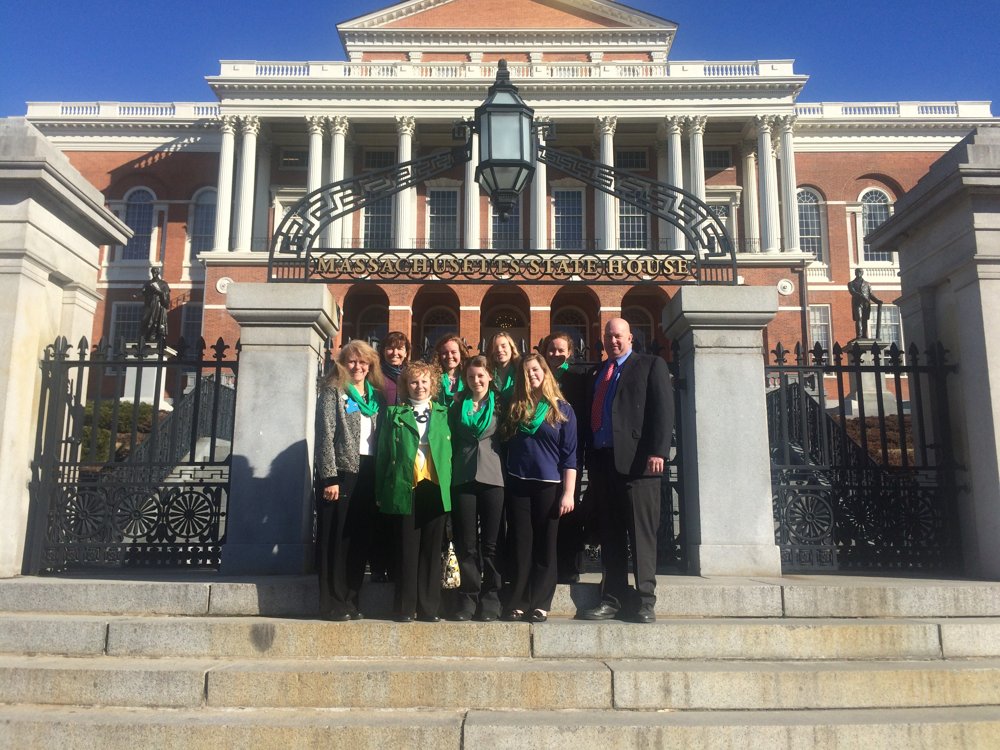
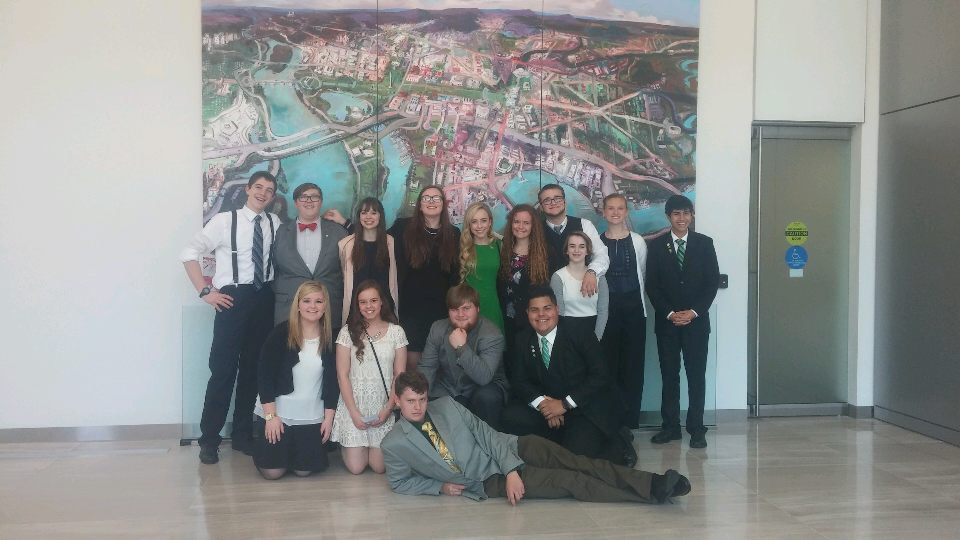
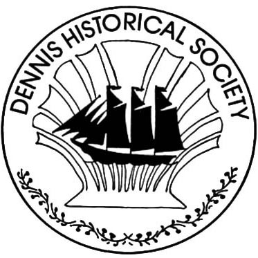
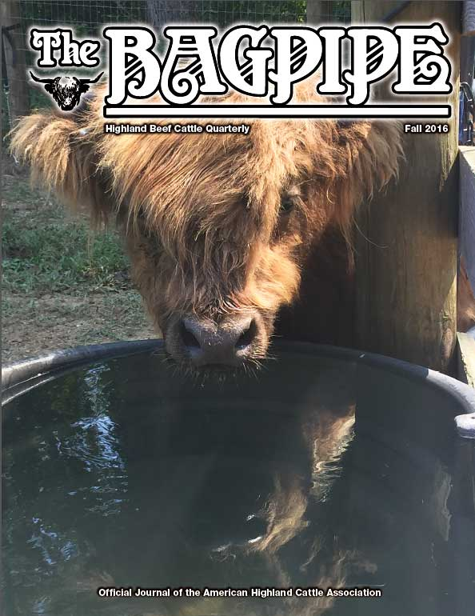

- Barnstable County delegate (2012-present)
- Team Captain, 2015 (Team won the New England Regional Sweepstakes, BIG E, Springfield, MA First time in 31 years!)
- 2016 Massachusetts Team won consecutive Regional Sweepstakes and interviewed by Boston Channel 5
- Top New England livestock judging team at local competitions and throughout the Northeast region
 • Barnstable County 4H Ambassador (2011-present)
- Promote the 4H program at farmers markets, fairs, public venues
- Junior Leader at Events, put together educational programs including public speaking, civic duty, STEM and agricultural education
- Lobby at Massachusetts State House for agriculture education, and to support MA USDA meat processing facilities
 • Massachusetts State 4H Ambassador (2016-present)
- One out of seven 2016 MA representatives
- Actively speak and communicate with State Representatives at MA State House on youth development programs and STEM program development
- 2016 New England 4H Bioengery Representative, presented with National 4H Committee to the United States Department of Energy (DOE) in Washington D.C.
- Speak with MA Senators and Congressmen/women in D.C. to promote STEM and agricultural youth education programs

• Field Hockey
- First String, Varsity Team, 9th, 10th, 11th , 12th grade, left midfield and left screen position
- Cape Cod Summer Field Hockey League, 9th, 10th, 11th, 12th grade, midfielder
• Northside United Methodist Church Youth Group
- Community service work in local area
- Head Shephard, livestock annual living nativity
- Work Camp participant, repair houses on mission trips
• 2012- Nashua, New Hampshire
• 2013- Sturgis, South Dakota
• 2015- Pocahontas, Virginia
• 2016- Woonsocket, Rhode Island

• Junior Docent (Colonial Era) Dennis Historical Society
- Josiah Dennis Manse : Town of Dennis, founding father homestead
- Manage children and textile room
- Educate visitors on the Colonial Era, hands on tutorial, weaving rugs, wool preparation for spinning.
- Organize, conduct colonial era children’s games
- Bake colonial style pies for annual 4th of July Sale
 • Regional Reporter, Bagpipe magazine, American Highland Cattle Association (2012-present)
- Columnist for the American Highland Cattle Quarterly National Magazine
- Contact and interview northeast farms for current events and happenings
- Report regional association news and president's message to the national board